29/11/2023 — Bài đố: 2 bệnh nhân tương tự với điện tâm đồ tương tự. Ca nào là OMI — không ca nào, một ca, hay cả hai? Bạn có làm tốt hơn Queen of Hearts không?
Bản dịch tiếng Việt của bài "Quiz post: 2 similar patients with similar ECGs. Which, if any, or both, are OMI? Will you outperform the Queen of Hearts?" – Dr. Smith’s ECG Blog. Giữ nguyên toàn bộ 16 hình ảnh của bản gốc.
Tác giả: Pendell Meyers
Hai bệnh nhân trưởng thành ở độ tuổi 50 gọi đội cấp cứu ngoài viện (EMS) vì đau ngực cấp khởi phát trong vòng một giờ qua. Cả hai đều tỉnh táo, dấu hiệu sinh tồn bình thường. Ở cả hai ca, điện tâm đồ do EMS ghi được truyền tới bác sĩ khoa cấp cứu (ED) kèm câu hỏi “chúng tôi có nên kích hoạt phòng thông tim (cath lab) không?”
Bạn nghĩ sao? Đây là hai bản ghi:
Bệnh nhân 1, điện tâm đồ 1:

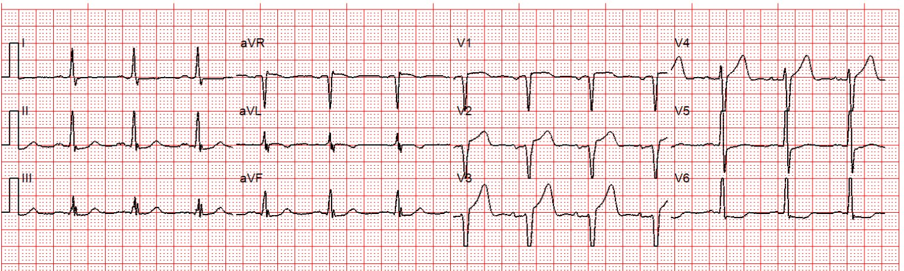
Bệnh nhân 2, điện tâm đồ 1:

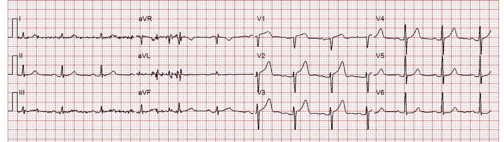
Diễn giải của Queen of Hearts:
Bệnh nhân 1, điện tâm đồ 1:

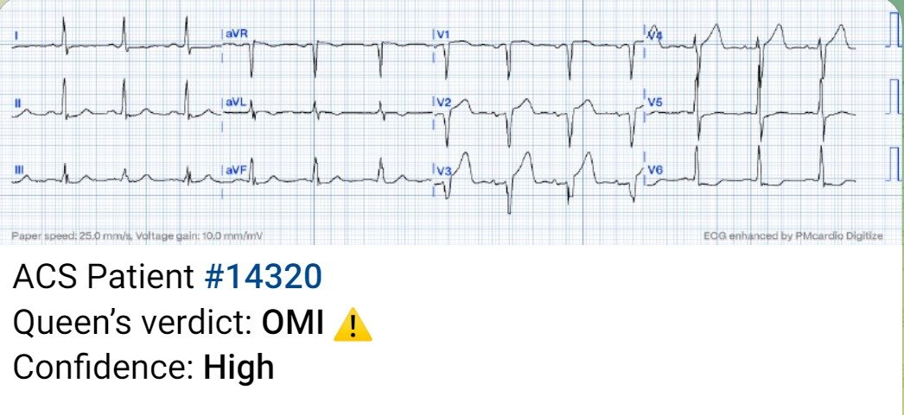

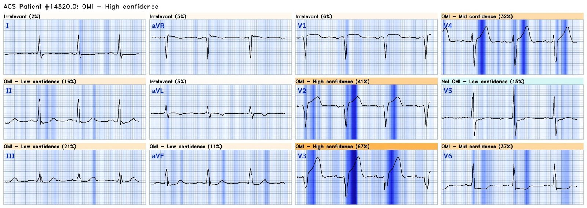
Bệnh nhân 2, điện tâm đồ 1:

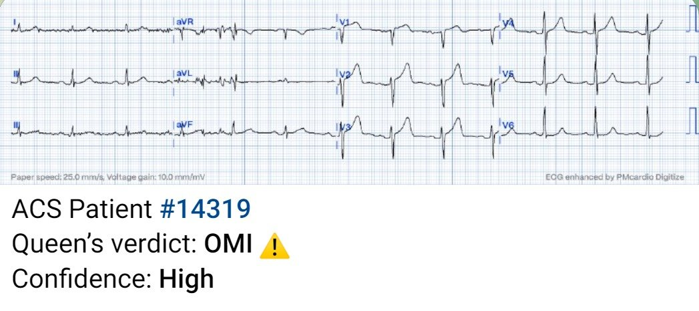

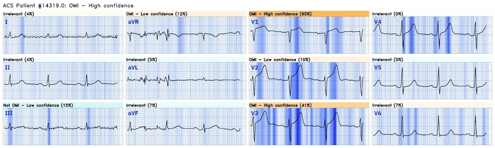
Diễn biến lâm sàng và kết cục của Bệnh nhân 1:
Bác sĩ cấp cứu đã không nhận ra rằng biên độ sóng S bị cắt cụt và vạt vuông ở mức 10 mm, khiến việc đánh giá tính tương xứng (proportionality) bị hạn chế rất nhiều. Anh ấy chẩn đoán “STEMI” thành trước và kích hoạt phòng thông tim.
Khi bệnh nhân tới khoa cấp cứu, trong lúc chờ ê-kíp phòng thông tim, bác sĩ ghi thêm một điện tâm đồ khác:

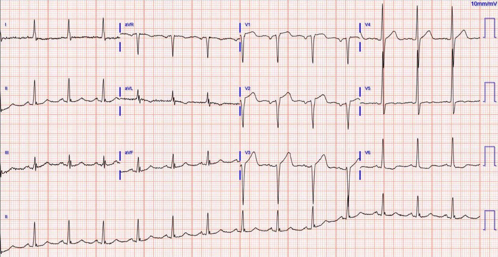

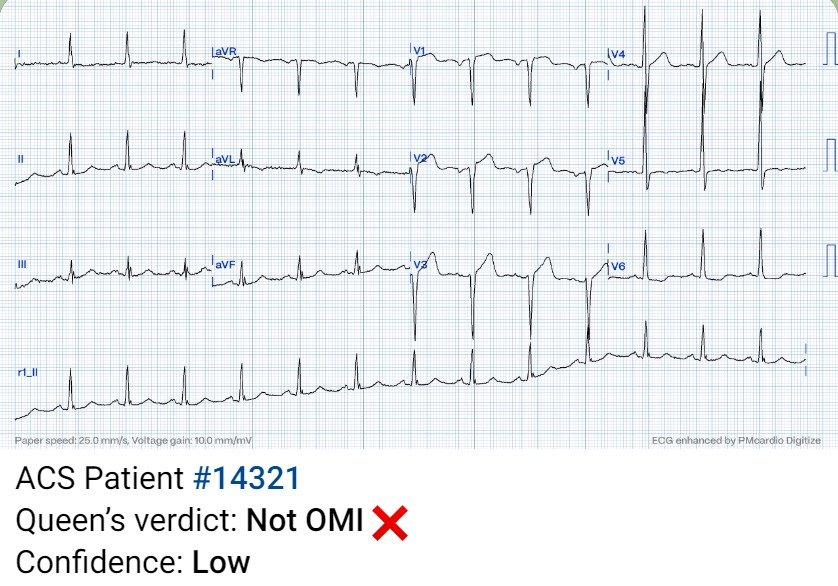
Giờ đây bạn có thể thấy toàn bộ biên độ của phức bộ QRS điện thế cao, nhiều khả năng có phì đại thất trái (LVH) ở một mức độ nào đó. Khi đã có thể đánh giá đúng tính tương xứng (một trong nhiều đặc điểm then chốt mà các guideline hoàn toàn bỏ qua), bạn và Queen có thể thấy bản ghi này ít đáng lo hơn nhiều. Tuy vậy, độ tin cậy thấp vẫn không được gạt bỏ, và vẫn cần được đánh giá cấp cứu.
Điện tâm đồ mới này vẫn được đọc là STEMI và bệnh nhân được đưa vào phòng thông tim, nơi chụp mạch vành cho thấy toàn bộ các động mạch vành hoàn toàn bình thường.
Smith: điện tâm đồ này chắc chắn không phải OMI, nhưng có thể bị nhầm với hình ảnh xoáy trước tim (Precordial Swirl), tức OMI vùng vách với ST chênh lên (STE) ở V1 và ST chênh xuống (STD) ở V6.
Xem các ca sau:
Precordial Swirl — 20 cases of Swirl or Look-Alikes (Xoáy trước tim — 20 ca Swirl hoặc hình ảnh trông giống Swirl)
Các lần đo troponin I độ nhạy cao liên tiếp sau đó đều dưới giới hạn phát hiện. Nhồi máu cơ tim cấp (AMI) được loại trừ hoàn toàn. Các điện tâm đồ liên tiếp không thay đổi. Siêu âm tim cho thấy EF bình thường, không có rối loạn vận động thành và không có tràn dịch màng ngoài tim. Dĩ nhiên bệnh nhân vẫn bị gán chẩn đoán sai lầm “viêm màng ngoài tim” sau khi chụp CT cũng đã loại trừ PE và bóc tách. Nhưng bệnh nhân hồi phục tốt.
Diễn biến lâm sàng và kết cục của Bệnh nhân 2:
Điện tâm đồ đầu tiên của bệnh nhân này được gửi tới bác sĩ cấp cứu; bác sĩ nói rằng nó không đạt tiêu chuẩn STEMI, nhưng đã khôn ngoan đồng ý với EMS ghi các điện tâm đồ liên tiếp trong lúc vận chuyển.
25 phút sau, EMS gọi lại với điện tâm đồ mới này:

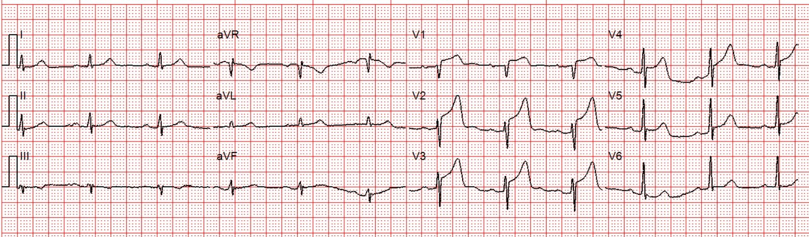

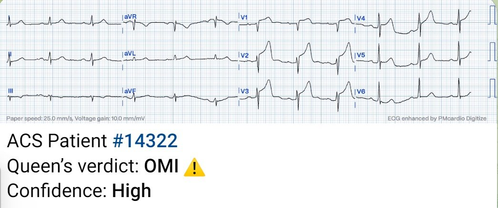

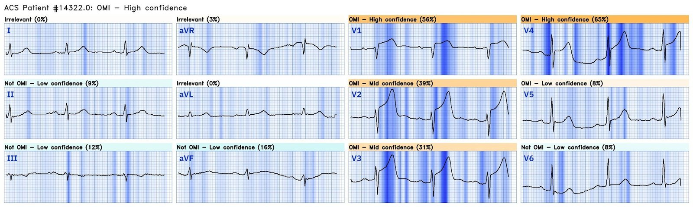
OMI STEMI dương tính (STEMI(+) OMI) cực kỳ rõ ràng. Lúc này phòng thông tim mới được kích hoạt.
Bệnh nhân được phát hiện tắc hoàn toàn LAD “đoạn giữa” và đã được đặt stent:

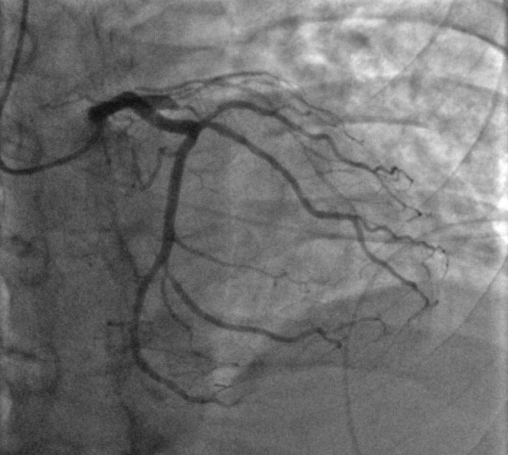

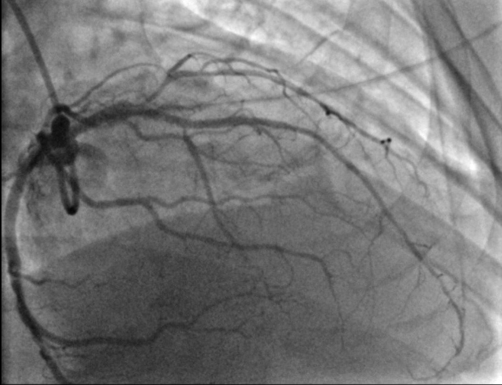
Kết quả troponin ban đầu thấp hơn giới hạn phát hiện! (dưới 6 ng/L)
Các lần troponin tiếp theo là:
10.054
lớn hơn 25.000 x 2 (hai lần)
không đo thêm
Điện tâm đồ sáng hôm sau:

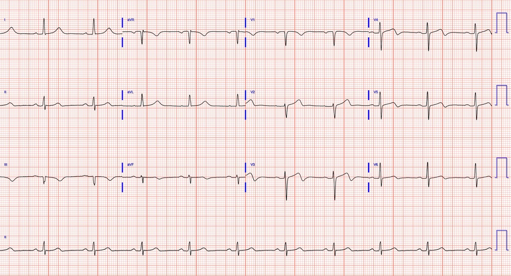
Rất tiếc là không có siêu âm tim.
Những điểm cần học:
Vì tính tương xứng là then chốt trong đọc điện tâm đồ, bất kỳ hệ thống điện tâm đồ nào giới hạn hoặc cắt bớt phần hiển thị điện thế đều là một lỗi nghiêm trọng do con người gây ra trong đọc điện tâm đồ, có thể dẫn tới những quyết định sai. Thường gặp nhất, nó gây kích hoạt phòng thông tim dương tính giả do tỷ lệ STE/S bị thổi phồng. Trong ca này, đây có lẽ là một yếu tố khiến các bác sĩ và Queen of Hearts dẫn tới kích hoạt phòng thông tim dương tính giả.
Chúng tôi đang cố gắng làm việc với các công ty sản xuất máy theo dõi của EMS để khắc phục điều này, đồng thời cố gắng huấn luyện riêng cho Queen để diễn giải “xuyên qua” hạn chế này, hay bất chấp hạn chế này.
OMI LAD dạng “hình ảnh xoáy trước tim” (precordial swirl pattern) là một hình ảnh quan trọng cần học, và nó bị LVH bắt chước. Xem các ca này đặt cạnh nhau và đối chiếu với kết cục sẽ giúp bạn học được hình ảnh này và phân biệt nó với các hình ảnh bắt chước.
Troponin ban đầu trong OMI LAD toàn phát không hiếm khi ở mức không phát hiện được, ngay cả trong thời đại troponin độ nhạy cao, nếu bệnh nhân mới có triệu chứng OMI trong thời gian rất ngắn.

===================================
BÌNH LUẬN CỦA TÔI, bởi KEN GRAUER, MD (29/11/2023):
===================================
Một bài quan trọng của Dr. Meyers — với một “cách khắc phục DỄ DÀNG” — cùng với “Quan điểm của tôi” về một số khái niệm tinh tế hơn nhưng thiết yếu.
- Để rõ ràng, trong Hình 1 — tôi đã tái hiện và đánh dấu các bản ghi EMS ban đầu của 2 bệnh nhân trong ca hôm nay.
- Xin nhấn mạnh: Cả hai bệnh nhân này đều đến viện vì CP mới khởi phát (Chest Pain — đau ngực).
- Suy nghĩ ban đầu của tôi: Xét bệnh sử đau ngực mới — tôi hoàn toàn thừa nhận rằng ban đầu tôi thấy khó quyết định liệu một (hay cả hai) bệnh nhân này có đang trong quá trình tiến triển OMI cấp hay không.

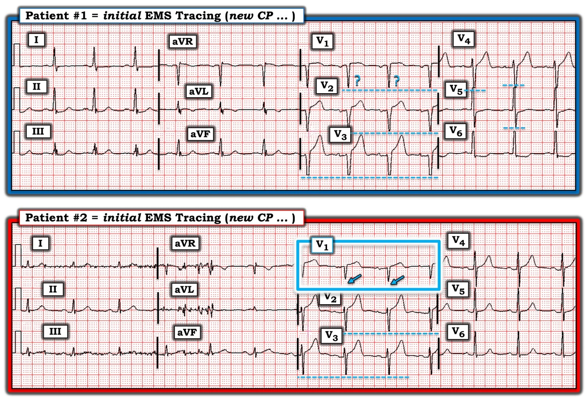
“Cách khắc phục DỄ DÀNG” trong Hình 1:
Có một giới hạn về mức điện thế mà điện tâm đồ trước viện ở hầu hết các hệ thống EMS có thể hiển thị. Do đó — biên độ QRS bị cắt cụt một cách tự động khi vượt quá giới hạn đó (là 10 mm đối với sóng S sâu nhất và sóng R cao nhất trong các bản ghi hôm nay).
- Một khi đã biết hiện tượng tự động cắt cụt biên độ điện tâm đồ ở hầu hết các hệ thống EMS tại Hoa Kỳ — việc nhận ra nó trở nên dễ dàng. Các đường chấm chấm màu XANH trong bản ghi EMS ban đầu của Bệnh nhân #1 — cho thấy sóng S bị cắt cụt ở các chuyển đạo V2,V3 và V4 — và sóng R bị cắt cụt ở các chuyển đạo V5,V6. (Tôi ghi ?? cho sóng S ở chuyển đạo V1 — vì tôi không chắc sóng S ở chuyển đạo này đúng bằng 10 mm, hay có lẽ bị cắt cụt nhẹ).
- Khoảng cách giữa nhánh lên/nhánh xuống của sóng R hoặc sóng S tại điểm cắt 10 mm càng lớn — thì biên độ thực của sóng S hoặc sóng R càng có khả năng lớn. Ví dụ, ở Bệnh nhân #1 — tôi nghi rằng sóng S thực lớn nhất sẽ nằm ở chuyển đạo V3, do độ mở lớn tại điểm cắt 10 mm.
- “Hiệu ứng cắt cụt” — rõ ràng ít đáng kể hơn trong bản ghi EMS ban đầu của Bệnh nhân #2 — chỉ hiện diện ở các chuyển đạo V2,V3 (và nhiều khả năng không đáng kể, vì nhánh lên-xuống của sóng S gần như khép lại tại điểm cắt 10 mm ở các chuyển đạo này).
- Như Dr. Meyers đã nêu — việc cắt cụt đáng kể biên độ sóng S hoặc sóng R có thể làm méo rõ rệt hình dạng sóng ST-T, khiến khái niệm quan trọng về “tính tương xứng“ trở nên vô dụng. Và, như đã được chứng minh ở Bệnh nhân #1 trong ca hôm nay — điện tâm đồ ghi lại tại khoa cấp cứu cho thấy lý do của việc cắt cụt là biên độ QRS tăng rất nhiều, là hậu quả của LVH rõ rệt (và trong bối cảnh LVH — các sóng ST-T chênh lên ở thành trước thấy trong bản ghi EMS ban đầu của Bệnh nhân #1 phù hợp với hình ảnh “tăng gánh” thất trái ở các chuyển đạo thành trước).
- ĐIỂM THEN CHỐT (PEARL) #1: Điều quan trọng là phải biết hiệu ứng cắt cụt tự động này, vốn rất thường gặp trên điện tâm đồ của EMS — vì nếu không, người đọc có thể hiểu sai các sóng ST-T có vẻ “lớn” là không tương xứng với một sóng S ngắn, và do đó cho rằng đây là sóng T tối cấp (Xin xem phần Bình luận của tôi ở cuối trang trong các bài ngày 20 tháng Sáu năm 2020 — bài ngày 6 tháng Hai năm 2020 — và bài ngày 14 tháng Mười Một năm 2023 trên Dr. Smith’s ECG Blog).
- ĐIỂM THEN CHỐT (PEARL) #2: Hiệu ứng cắt cụt tự động của EMS dễ gây nhầm lẫn nhất ở những bệnh nhân đau ngực có LVH rõ rệt kèm sóng S thành trước sâu (đúng như chúng ta thấy ở Bệnh nhân #1 trong ca hôm nay — và như tôi mô tả trong bài ngày 27 tháng Mười Hai năm 2018, cũng như trong các bài nêu trên mà tôi đã trích dẫn ở Pearl #1).
- ĐIỂM THEN CHỐT (PEARL) #3: Như Dr. Meyers đã nêu — khái niệm MẤU CHỐT thứ 3 cần biết khi đọc bản ghi EMS của bệnh nhân đau ngực có LVH — là “Xoáy trước tim (Precordial Swirl)“. Bài ngày 15 tháng Mười năm 2022 trên Dr. Smith’s ECG Blog giới thiệu không dưới 20 ví dụ điện tâm đồ của Dr. Meyers và Dr. Smith về những gì là và không phải là “xoáy trước tim” do tắc đoạn gần LAD (Trong Bình luận của tôi ở cuối trang trong bài ngày 15 tháng Mười này — tôi tổng hợp các đặc điểm MẤU CHỐT giúp dễ nhận diện hình ảnh xoáy trước tim này).
ĐIỂM THEN CHỐT (PEARL) #4: Làm thế nào để “Tổng hợp lại tất cả” về CA BỆNH hôm nay …
Dù đã biết từng điểm tôi nêu ở trên — ban đầu tôi vẫn gặp khó khăn khi xác định liệu Bệnh nhân #1 và/hoặc Bệnh nhân #2 có đang “trong quá trình” tiến triển OMI cấp hay không. Suy nghĩ của tôi như sau:
- Với Bệnh nhân #1: Tôi lập tức nhận ra sóng S bị cắt cụt ở các chuyển đạo V2,V3,V4 (và có thể cả ở chuyển đạo V1) — cũng như chiều cao sóng R bị cắt cụt ở các chuyển đạo V5,V6. Đặc biệt khi xét độ mở rộng giữa nhánh xuống và nhánh lên của sóng S ở chuyển đạo V3 — tôi gần như chắc chắn có LVH rõ rệt — và rằng điều này có thể giải thích toàn bộ các dấu hiệu ST-T thấy trong bản ghi EMS ban đầu này.
- Dù đã nói như trên — tôi không chắc chắn 100% rằng LVH giải thích được mọi thứ trên điện tâm đồ EMS ban đầu của người bệnh trung niên có đau ngực mới khởi phát này. Tôi thấy đỉnh sóng T ở chuyển đạo V2 dường như “to bè” hơn mong đợi — đáy sóng T ở chuyển đạo V3 dường như “rộng” hơn mong đợi — điểm J chênh xuống ở chuyển đạo V6 kèm đoạn ST dẹt (không điển hình cho “tăng gánh” thất trái) — và có ST dẹt kín đáo ở các chuyển đạo III và aVF — cùng ST dạng vòm (coving) và sóng T đảo ngược nông ở chuyển đạo aVL.
- ĐIỀU CỐT LÕI của tôi với Bệnh nhân #1: Tôi sẽ không kích hoạt phòng thông tim chỉ dựa trên bản ghi ban đầu này. Tôi nghi ngờ LVH là vấn đề chính ở đây — nhưng cảm thấy cần đánh giá thêm, bao gồm xem điện tâm đồ đầu tiên tại khoa cấp cứu để đánh giá rõ hơn tính tương xứng thật sự của sóng ST-T. Và như Dr. Meyers đã trình bày trong phần bàn luận ở trên — điện tâm đồ ghi lại tại khoa cấp cứu không bị cắt cụt — ủng hộ mạnh mẽ giả thuyết rằng các dấu hiệu bất thường là hậu quả của LVH rõ rệt chứ không phải OMI cấp.
- Với Bệnh nhân #2: Một lần nữa tôi lập tức nhận ra sóng S bị cắt cụt ở các chuyển đạo V2 và V3 — tuy nhiên việc không có “độ mở” đáng kể giữa nhánh xuống và nhánh lên của sóng S ở các chuyển đạo này gợi ý rằng sóng S ít có khả năng đủ sâu để giải thích các sóng T cao đến bất ngờ, với đỉnh “to bè” và đáy rộng ở các chuyển đạo này.
- Điểm MẤU CHỐT: Không có cắt cụt ở chuyển đạo V1 trong bản ghi EMS ban đầu của Bệnh nhân #2! (Các mũi tên XANH ở các chuyển đạo này cho thấy biên độ sóng S rõ ràng thấp hơn điểm cắt 10 mm!). Vì không có cắt cụt ở chuyển đạo V1 — KHÔNG THỂ NÀO việc đoạn khởi đầu ST chênh lên bị thẳng đuỗn, với sóng T cao và “to bè” không tương xứng (khi xét biên độ rất nhỏ của sóng S ở V1) lại có thể là bình thường. Ở bệnh nhân có đau ngực mới này — OMI LAD cấp phải được coi là có cho đến khi chứng minh được điều ngược lại.
- ĐIỀU CỐT LÕI của tôi với Bệnh nhân #2: Khi nhận ra chuyển đạo V1 (trong hình chữ nhật XANH) chắc chắn bất thường — tôi càng tin hơn rằng các sóng T ở các chuyển đạo lân cận V2,V3,V4 là tối cấp cho đến khi chứng minh được điều ngược lại. Hoàn toàn không bất ngờ khi biết bệnh nhân này đã tiến triển thành tắc hoàn toàn LAD đoạn giữa.